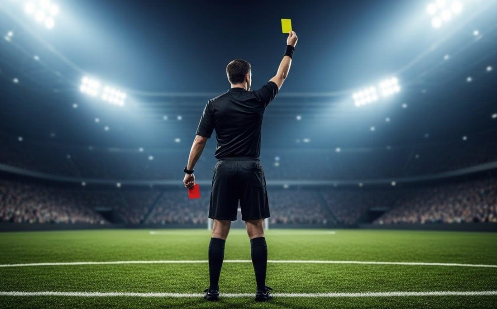

السؤال 1 / 20
النقط: 0
المادة 1 • Loi 1
اختار جواب واحد. Choisis une seule réponse.
FIN DU QUIZ

تعلم قانون التحكيم بالدارجة والفرنسية
Apprends les Lois du Jeu en Darija et en français
اختار جواب واحد. Choisis une seule réponse.